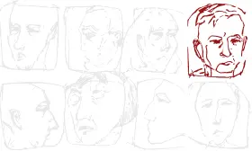

Platfor.ma | IST Publishing
СЕРГІЙ
ЖАДАН
книжкова шафа головного українського письменника
Platfor.ma разом із видавництвом IST Publishing запускає проєкт, який розкриє вплив літератури на життя наших сучасників і силу ніжних почуттів до неї.
Першим про свою домашню бібліотеку, пристрасть до книжок та твір, що перевернув все з ніг на голову, розповідає український письменник і музикант Сергій Жадан
Література формує особистість, наповнює голову думками, створює ідеї та іноді навіть змінює життя. Сила та міць однієї невеличкої книги незмірні: часто саме між рядків ми закохуємося, знаходимо вірного друга або досвідченого вчителя, пізнаємо себе.
01
ЯК ЦЕ БУЛО
Харківський літературний музей
Харківський літературний музей — це одне з найважливіших місць y моєму житті. Я сюди приїздив ще школярем, коли вчився в гімназії в Старобільську. Мене привела моя тітка, Олександра Ковальова, поетка і перекладачка, членкиня спілки письменників. Я вже тоді активно цікавився літературою та поезією і музей став для мене потрясінням.
Коли ми були молодими поетами
Ми були молодими поетами і нас ніхто не друкував. Видати книжку було дуже важко, майже неможливо, тож ми подалися до самвидаву. В нас була група «Червона фіра», ми друкували свої вірші в «збірниках», а тоді з'явився ксерокс — і це вже була революція. Свою першу книгу я надрукував у самвидавчий спосіб, 100 примірників. А вже першу офіційну книжку, нормальну, надрукували 1995 року.
”
Книга для мене — це заняття, наповнене сенсом, який не треба пояснювати. Для мене книги завжди важили дуже багато. Мені треба завжди мати книжку, без неї якось важко. От я кудись йду, а в мене в рюкзаку лежить Сковорода. Час від часу я дістаю і перечитую.
02
ФІЗИЧНА ПРИСУТНІСТЬ ПАПЕРОВОЇ КНИГИ
Фізична присутність паперової книги для мене дуже важлива
Для мене кожного разу втрата близької книги — це дуже особисте. Я все-таки людина ХХ ст, людина паперової книги. Я читаю з інтернету, але маю якусь залежність від фізичної книги. Коли кудись приїжджаю, намагаюся знайти букіністичний магазин, піти там копатися. Я книгами буквально обростаю.
03
ВІЗУАЛЬНЕ ОФОРМЛЕННЯ
Візуальне оформлення для мене також грає важливу роль. Є книги, які я не куплю саме через папір, шрифт чи оформлення. Мені подобаються видання з мінімалістичним оформленням, книги, яку можна просто покласти в кишеню і носити весь час з собою.
”
Якщо говорити про улюблені книги, то це саме поезія.
04
УЛЮБЛЕНІ КНИГИ
Люблю перечитувати поетичні книги. Мені здається, що перечитувати романи – доволі дивне заняття: якщо ти вже раз прочитав, то навіщо до нього повертатися. А поезію можна перебрати в руках декілька разів в силу її автономності, де кожен вірш є зліпком всесвіту. Тому я завжди намагаюся мати в доступності якісь поетичні збірники улюблених авторів.
Семенко
Книга, яка мене сформувала, стала моїм псалтирем — це збірка Михайля Семенка 1985 року. Це ще радянське видання, в ньому обережна радянська передмова, але це була революційна книга, тому що Семенка з 30-х років, тобто з часу його розстрілу 1937 року, не перевидавали. Він був заборонений, хоча серед поетів це завжди була легендарна особа.
Збірку я вперше побачив у Літмузеї. З того часу книжка для мене настільна, я постійно її за собою тягав. Приємно, що Семенка відкривають для себе й нові покоління поетів. Він, з одного боку, поет для поетів, бо страшенно технічний, модернізатор української поезії і багато чого приніс суто формально. Але, з іншого боку, його можна і читати, не сильно розбираючись в контексті.
Семенко для мене справді дуже важливий поет, попри те, що поетично ми з ним дуже різні. Але на рівні гострого відчуття реальності він мені дуже близький. Багато моїх друзів знають, що я люблю Семенка, що це фактично мій патрон, і вони мені цю книгу дарують, в мене вдома їх вже штук сім. В одному виданні. Свого часу в мене ця книжка десь зникла, для мене це була травма, я кілька років жив без неї і тому тепер, якщо я її десь бачу, я маю її обов'язково купити.
Антонич
Біля ліжка у мене лежить видання Ігоря-Богдана Антонича. Для мене він важливий поет через поєднання у його творчості біблійності і поганства. Постійне цитування Святого письма і разом з тим занурення в карпатську лемківську міфологію. Дуже дивне поєднання. З одного боку, міський, урбаністичний поет, а з іншого боку, старозавітно-буколістичний. Цікавий, ні на кого не схожий, надзвичайно потужний. Мені близька його система поетична і світоглядна, те як він сприймає, бачить світ, як велику дивовижу, якою він не припиняє захоплюватись. Вона в чомусь його лякає, але в будь-якому разі це якийсь екстаз, захват, як перед великою книгою, бажання читати цю книгу, навіть якщо вона в чомусь відштовхує і лякає. Мені страшенно імпонує такий екстатичний захват перед життям.
Дитинство та Тореадори з Васюківки
Пам'ятаю як у дитинстві мама дістала мені «Три мушкетери», Купера, Дефо і для мене це було справжнє свято. Також у той час для мене стало потрясінням «Тореадори з Васюківки» Всеволода Нестайка. Я досі всім рекомендую цю книгу. Ще в мене є тітка, яка працювала бібліотекаркою в Первомайську, на промисловому Донбасі, вона теж час від часу давала мені прочитати якісь книги, які неможливо було дістати в книгарні.
”
Це було щастя, пригода, а за кожною книгою стояв цілий світ.
В радянський час у всіх вдома були книги. Не те щоб добрані бібліотеки, але книги були у всіх. Книги купували, вони були дешеві, доступні. В таких бібліотеках завжди був набір класики, а далі — хто що міг дозволити й знайти.
Гоголь та Шевченко
За великим рахунком мене цікавила шкільна хрестоматія. Гоголя і Шевченка я прочитав сам, ще в молодших класах. Це не був примус. Це справді було самостійне добровільне читання. Ранні українські повісті Гоголя – це те, що частково визначило мою оптику, моє бачення світу. Сприйняття метафор, сприйняття образу як такого. Великою мірою він поставив моє бачення.
Ну і Шевченко. З дитячого віку він для мене був автором не пафосних патріотичних віршів, а скоріше якихось неймовірно сильних, яскравих персонажів та образів. «Гайдамаки» — це не поема про тяжку долю українського народу, а про неймовірні пригоди, про неймовірну силу, закоханості, пристрасті.
”
Для мене сьогодні Гоголь — це певна матриця.
Ну і Шевченко. З дитячого віку він для мене був автором не пафосних патріотичних віршів, а скоріше якихось неймовірно сильних, яскравих персонажів та образів. «Гайдамаки» — це не поема про тяжку долю українського народу, а про неймовірні пригоди, про неймовірну силу, закоханості, пристрасті.
Грицько Чубай
Ще один дуже важливий автор — Грицько Чубай. Він помер ще коли я був дитиною і вперше дізнався про нього лише студентом. Для мене він був відкриттям: зовсім інша поетика, несподівана мова, абсолютно нетрадиційне формулювання поетичного наративу. А потім я познайомився з Тарасом Чубаєм, його сином, з музикою Плачу Єремії, почув ці тексти, як пісні. З того часу Чубай важливий для мене — поет, чий голос завжди зі мною.
Пауль Целян
Поезію Пауля Целяна я для себе відкрив доволі пізно. Оскільки в Чернівцях робиться фестиваль Meridian Czernowitz, то Целян став таким родинним для мене поетом. Він дійсно неймовірний. З одного боку, стиль складний, густий, затемнений, граматичний. Він вважається складним поетом. А з іншого боку, ця складність доволі універсальна, вона не закриває шляхи розуміння, а скоріше дає тобі можливість побачити ці тексти дуже по-різному. Коли я взяв його найвідомішу книгу «Нічийна троянда» у перекладі Петра Рихла, почав читати, то в якийсь момент зрозумів, що я її паралельно перекладаю. Робив свої варіанти перекладів, тому що це страшенно захопливо.
”
Кожний перекладач завжди додає щось своє. Тому що ця багатозначність, багатовекторність — вона фантастична.
Зараз я працюю над книгою Бертольда Брехта. Хочу зробити переклад вибраних віршів, тому що в нас його давно забули.